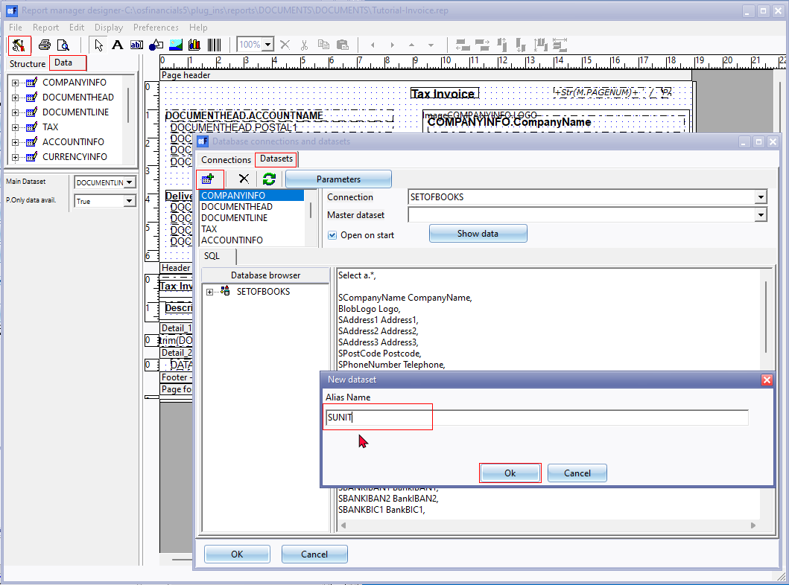
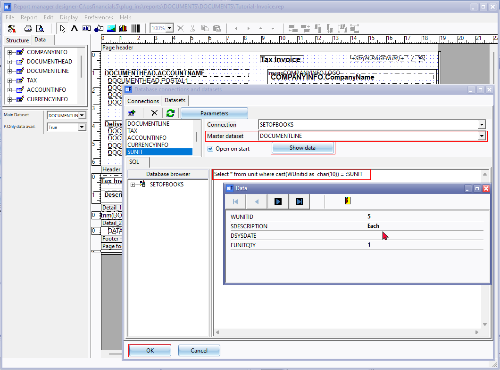
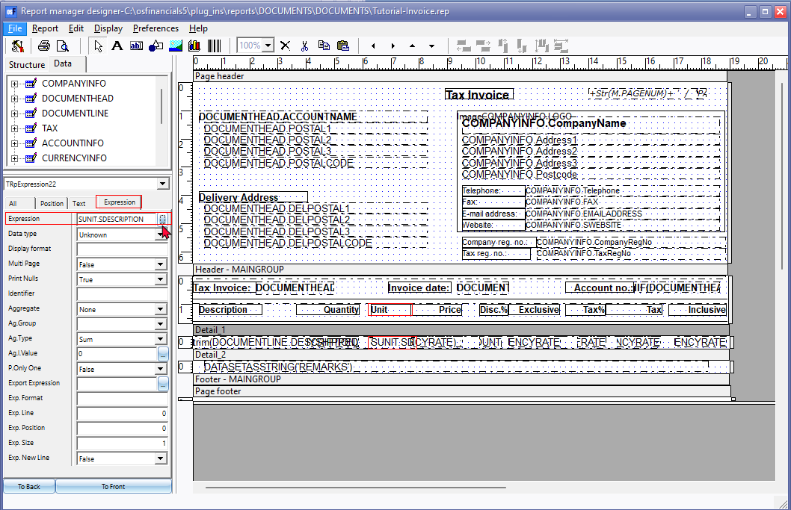
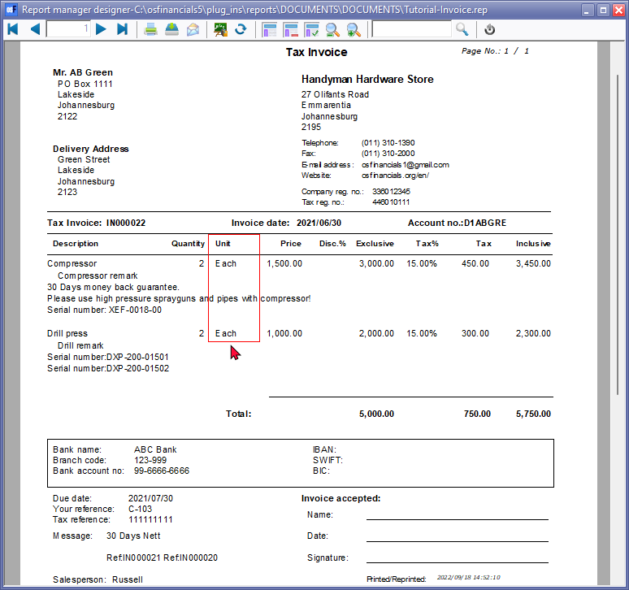

Report designer - Add unit descriptions to layout files
The Unit description can be added to document layout files.
|
|
Before changing a layout file, it is recommended that you select your report, and click on the Copy report button (on the "Report man" screen). It will create a Copy of your layout file. If you have customised a layout file, save it with a different name. This will prevent loosing your layout file, being over-written by reinstalling or installing osFinancials5. |

To add the Stock unit description to layout files:
- Click on the Setup ribbon, select Report designer.
- Select the document layout file (it is recommended that you edit a copy of the document layout file).
- Click on the Report menu and select Database connections and datasets.
- On the Database connections and datasets, click on the Add icon.
- On the new Dataset screen, enter SUNIT in the Alias Name field.
- Click on the OK button. The SUNIT data set will be added to the Datasets tab.

- Select the SUNIT dataset and link it to the DOCUMENTLINE on the Master dataset field.
- Paste the following sql in the SUNIT sql box:
Select * from unit where cast(WUnitid as varchar(10)) = :SUNIT
- Click on the Show data button to test the data. The data as entered in the Stock information - Units tab (Setup ribbon) will be displayed (if the Units is linked to a stock item included in the Preview document). 
- Click on the Close button to exit the Data screen.
- Click on the OK button of the "Database connections and datasets" screen to save the SQL.
- Select the Detail section of the document lines. To insert the expression, simply drag the "SUNIT.SDESCRIPTION" field to the place to be displayed on the layout file.
- Add the text Unit to the heading for the added expression.

- Click on the Preview icon to preview the document. The Unit descriptions should be displayed.

- Close the "Preview" screen and close "Report man" screen.
|
|
Whenever you close the "Report manager designer" screen, after editing your report, remember save the report. If you click on No, on the "Save report?" confirmation message, your changes will be discarded (lost). |